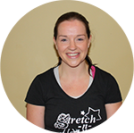
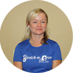

| Sheila | Joined February 2003 Sheila is passionate about bringing up children to be healthy individuals and her own daughters are just that. Sheila believes so much in the Stretch-n-Grow programme, she decided to expand her business into Kildare in 2012, where she works with a great team of coaches. | |
|  | Tanya | Tanya has studied Montessori Education, with an Under Grad in Landscape Architecture and has a strong interest in yoga, has a Masters in Sports & Exercise Management. She has worked in the fitness industry for the past 10 years teaching adults and children. |
| Hilary | Joined May 2003. Originally a Personal Trainer, Hillary was asked to coach a few classes, on a temporary basis, and never left. She immediately saw the benefits of the programme and the importance of educating from the earliest age. Hillary is currently completing a Diploma in Nutrition. | |
|  | Louise | With small children of her own, Louise was keen to find a career that would balance her home and work life. Since joining Stretch-n-Grow Karen has continued her education to improve her business. She has a Fetac Level 6 in Childcare and is a coach with Athletics Ireland |